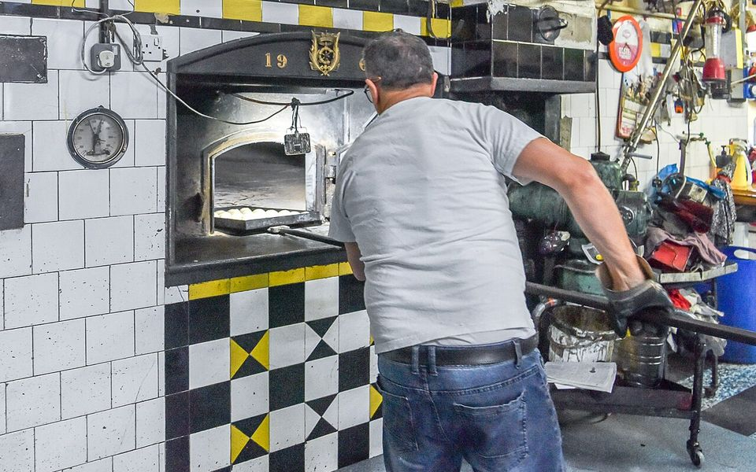

Malta oggi
Le scelte di Blue
Guide, classifiche e approfondimenti di CompareMalta.ai per vivere, mangiare e gestire i soldi meglio a Malta.
 Banca · 22 novembre 2026Le cinque grandi banche di Malta sullo smartphone: quanto valgono davvero le loro appAbbiamo valutato le app di BOV, HSBC, APS, BNF e Lombard su apertura conto, uso quotidiano, funzioni e wallet. La migliore arriva a 3,8 su 5; le altre restano a 2 o meno.
Banca · 22 novembre 2026Le cinque grandi banche di Malta sullo smartphone: quanto valgono davvero le loro appAbbiamo valutato le app di BOV, HSBC, APS, BNF e Lombard su apertura conto, uso quotidiano, funzioni e wallet. La migliore arriva a 3,8 su 5; le altre restano a 2 o meno.
Cibo e vino · 22 novembre 2026Cinque forni maltesi per cui vale la pena alzarsi prestoForni a legna, storie di guerra e la ftira di Gozo: cinque panifici tradizionali tra Malta e Gozo che cuociono ancora come una volta. Cibo e vino · 22 novembre 2026Tutte le stelle MICHELIN e i Bib Gourmand di Malta, in classificaLa Guida MICHELIN 2026 di Malta conferma tutti e sette i ristoranti stellati e aggiunge il quinto Bib Gourmand. Ecco tutti e dodici, dalle due stelle di ION Harbour ai migliori indirizzi qualità prezzo.
Cibo e vino · 22 novembre 2026Tutte le stelle MICHELIN e i Bib Gourmand di Malta, in classificaLa Guida MICHELIN 2026 di Malta conferma tutti e sette i ristoranti stellati e aggiunge il quinto Bib Gourmand. Ecco tutti e dodici, dalle due stelle di ION Harbour ai migliori indirizzi qualità prezzo.